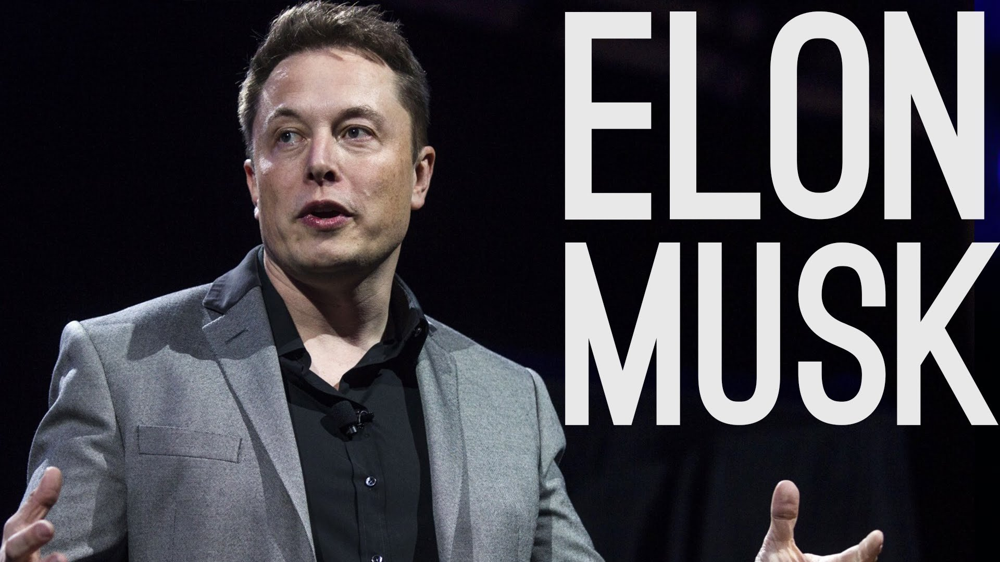
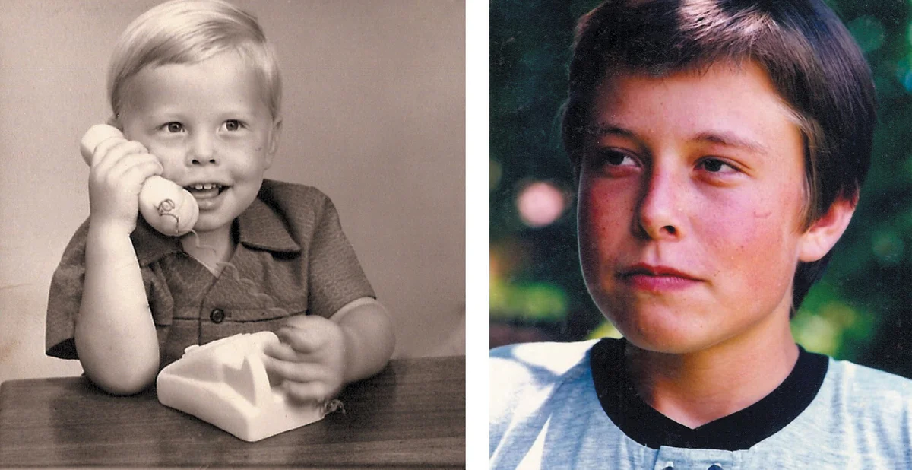

История Илона Маска
Илон Маск — американский предприниматель, инженер.
Принимал участие в создании платежной системы PayPal, которая в 2002 году была продана EBay за $1.5 млрд.
В возрасте десяти лет Илон получил в подарок свой первый компьютер Commodore VIC-20 и научился на нём программировать.
В двенадцатилетнем возрасте он продал за 500 долларов свою первую программу — видеоигру в стиле Space Invaders
под названием Blastar, в которой игрок обстреливал ряды инопланетян из лазерной пушки.
Илон окончил школу с отличными отметками по физике и информатике.
При этом в школе Маску приходилось нелегко в отношениях с другими детьми,
после одного из избиений ему пришлось восстанавливать сломанный нос.
В 19 лет Илон поступил в Королевский университет в Кингстоне, Онтарио.
В 1992 году Маск переехал в США и поступил в Пенсильванский университет,
где получил степень бакалавра наук по физике колледжа искусств и наук,
а также степень бакалавра по экономике Уортон школы бизнеса.
Со временем перешел в Стэнфорд, но обучение не закончил.
